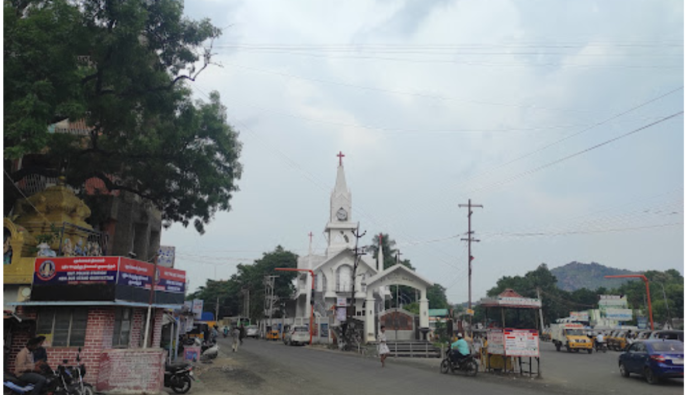

GUDIYATHAM

- Location: Gudiyatham is situated in the Vellore district of Tamil Nadu, India, near the border with Andhra Pradesh.
- History: The town has a rich historical background, having been ruled by various dynasties including the Cholas, Pallavas, Vijayanagara Empire, and the Nawabs of Arcot.
- Economy: Gudiyatham's economy is primarily based on agriculture, with crops like rice, sugarcane, and mangoes being significant. Small-scale industries also contribute to the local economy.
- Culture: Gudiyatham boasts a diverse cultural heritage, influenced by its historical past and the mix of various communities living in the region. The town celebrates various festivals and events throughout the year.
- Tourism: While not a major tourist destination, Gudiyatham does have historical sites such as temples, forts, and mosques, reflecting the region's diverse religious and architectural influences.
Click image to view GUDIYATHAM in map